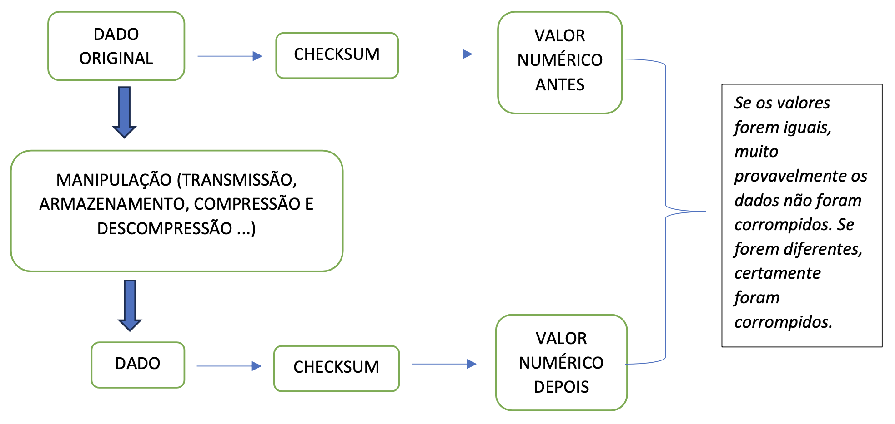

Introdução ao Checksum
Neste projeto, serão adicionadas novas funcionalidades ao protocolo em desenvolvimento, sendo uma delas o checksum.
O checksum (ou soma de verificação) é um valor numérico gerado a partir de um conjunto de dados, utilizado para verificar a integridade dessas informações.
Esse valor é obtido por meio de uma função hash ou algoritmo matemático, resultando em um identificador único baseado no conteúdo original.
Caso os dados sejam alterados, o checksum calculado será diferente, evidenciando que houve modificação, seja ela intencional ou acidental.
No contexto de transmissão de dados, a função hash é aplicada aos dados originais, e o valor gerado é transmitido junto com eles.
No lado receptor, a mesma função é aplicada novamente sobre os dados recebidos, e o valor obtido é comparado com o checksum enviado pelo transmissor.
O checksum não corrige o erro, mas ajuda a detectar que algo saiu errado.
Objetivo do Checksum 1
Resposta!
O checksum é usado para detectar erros ou alterações nos dados transmitidos. Ele não criptografa, não comprime e não corrige automaticamente os erros.
Como Funciona
- Geração do checksum: um algoritmo específico (ex.: MD5, SHA-256, CRC32) processa os dados e gera um valor fixo.
- Transmissão ou armazenamento: o dado e seu checksum são enviados ou armazenados juntos.
- Verificação: o receptor recalcula o checksum a partir dos dados recebidos e compara com o original.
- Se os valores coincidirem, os dados provavelmente estão intactos.
- Se forem diferentes, houve alteração ou erro no processo.
De forma geral, o processo ocorre em quatro etapas:
1. O transmissor monta os dados
O transmissor prepara a mensagem ou o payload que será enviado.
2. O transmissor calcula o checksum
Um algoritmo é aplicado sobre os dados, gerando um valor numérico de verificação.
3. O pacote é enviado com os dados + checksum
Esse valor passa a fazer parte do pacote transmitido.
4. O receptor recalcula o checksum
Ao receber o pacote, o receptor executa o mesmo algoritmo sobre os dados recebidos e compara o resultado com o checksum enviado.
- ✅ Se os valores forem iguais, os dados são considerados válidos.
- ❌ Se os valores forem diferentes, o pacote é considerado corrompido.
Aplicações Comuns
- Verificação de integridade de arquivos: validar se um arquivo baixado não foi corrompido.
- Transmissão de dados: proteger contra erros em redes de comunicação.
- Segurança: detectar alterações não autorizadas em arquivos.

Verificação de Integridade 2
Resposta!
Como os dados recebidos mudaram, o checksum recalculado também muda. Isso indica erro na transmissão, e o pacote deve ser rejeitado ou tratado como inválido.
Checksum, CRC e Hash: qual a diferença?
Checksum
Termo mais geral para uma verificação numérica de integridade. Pode ser algo simples, como uma soma dos bytes, ou um cálculo mais específico definido pelo protocolo.
CRC
O CRC (Cyclic Redundancy Check) é um método mais robusto de detecção de erro, muito usado em redes, arquivos compactados e protocolos embarcados. É mais eficaz que um checksum simples para detectar vários tipos de erro comuns.
Hash criptográfico
Funções como MD5, SHA-1 e SHA-256 geram resumos dos dados, mas são mais associadas a integridade de arquivos, assinaturas digitais e segurança do que ao checksum clássico de protocolos simples.
Didaticamente, todos podem ser vistos como formas de "gerar um valor a partir dos dados", mas tecnicamente têm objetivos e robustez diferentes.
Principais Algoritmos
Diversos algoritmos podem ser utilizados como checksum, atribuindo um valor numérico a um conjunto de dados.
A tabela a seguir apresenta alguns exemplos comuns:
| Algoritmo | Bits (valor gerado) | Aplicação principal |
|---|---|---|
| CRC32 | 32 | Redes, compressão de arquivos (ZIP, RAR) |
| MD5 | 128 | Verificação de arquivos (obsoleto para fins de segurança) |
| SHA-1 | 160 | Git, certificados digitais (inseguro para criptografia) |
| SHA-256 | 256 | Segurança, Blockchain, SSL/TLS |
| BLAKE2 | 256+ | Alternativa rápida ao SHA-2 |
| Adler-32 | 32 | Checksum simples (mais rápido que CRC32, porém menos seguro) |
Boas práticas ao implementar checksum no projeto
1. Definir claramente quais campos entram no cálculo
Os alunos precisam saber exatamente se o checksum cobre somente o payload, header + payload, ou o pacote inteiro.
2. Padronizar o tamanho do campo
Defina se o checksum ocupará 1 byte, 2 bytes ou mais.
3. Calcular sempre antes do envio
O checksum deve ser gerado com os dados finais do pacote, antes da transmissão.
4. Verificar imediatamente ao receber
Assim que o pacote chega, o receptor deve validar o checksum antes de aceitar os dados.
5. Tratar erro de forma explícita
Se o checksum falhar, o protocolo deve:
- Descartar o pacote;
- Solicitar reenvio;
- Ou sinalizar erro de recepção.